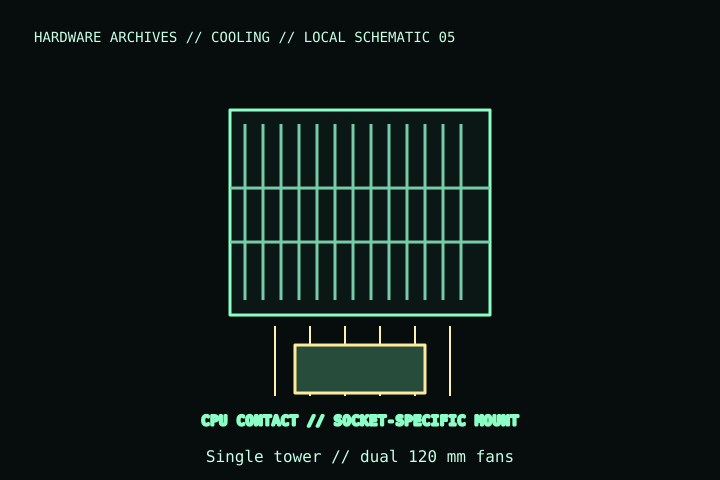

[ INDIVIDUAL COMPONENT // COOLING ]
Noctua NH-U12A
Single-tower 120 mm-class CPU cooler supplied with two NF-A12x25 PWM fans and seven heatpipes. This is NH-U12A, not the later NH-U12A chromax.black finish variant.

IDENTIFICATION: Match the complete model name, suffix, article number, bundle, revision, and host manual to the physical label before installation. Similar product names and variants may use different wiring or dimensions.
Specifications
| Catalog subcategory | Air CPU coolers / tower and dual-tower air coolers |
|---|---|
| Exact model | Noctua NH-U12A |
| Heatsink / overall size | Seven heatpipes; 158 mm overall height; 125 × 112 mm footprint with fans (verify orientation and current drawing) |
| Included fans | 2 × NF-A12x25 PWM; 120 mm, 4-pin PWM |
| Mounting | SecuFirm2 mounting; supported sockets depend on included/current kit—check Noctua compatibility centre for exact board and socket. |
| Clearance | 158 mm case-height requirement; RAM, VRM, PCIe, and chassis-panel clearance depend on socket position and board layout. |
Compatibility, installation & service
- Measure the case cooler-height limit and compare against the 158 mm installed height; account for fan clips and any raised fan over memory.
- Confirm socket, board, RAM, PCIe, and cooler orientation in Noctua’s compatibility centre before purchase.
- Connect each fan to a suitable 4-pin PWM header or a properly rated splitter; observe the header current limit.
Service notes
Remove dust with the fans stopped. If removing the cooler, clean and renew thermal compound and follow the SecuFirm2 installation sequence; do not reuse paste after lifting the heatsink.
Manufacturer references
- Noctua — NH-U12AManufacturer product page and technical specifications.
- Noctua — Compatibility centreSocket/board compatibility lookup and installation references.
Verify fit, wiring, and ratings against the manufacturer document for the exact unit and host. This catalog record is an identification aid, not a compatibility guarantee.